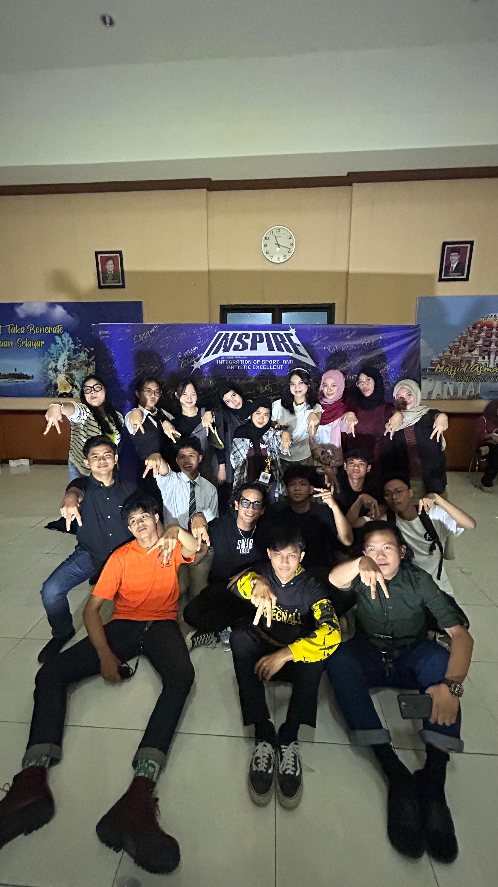
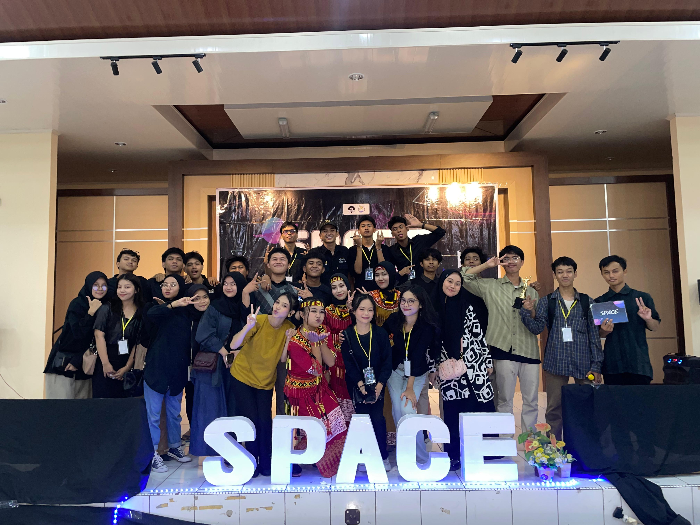
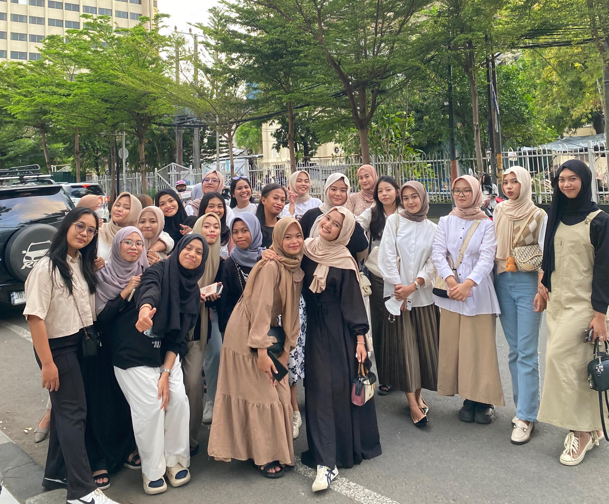
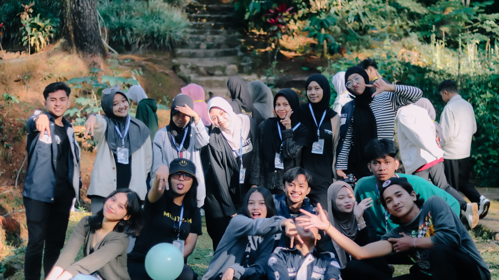
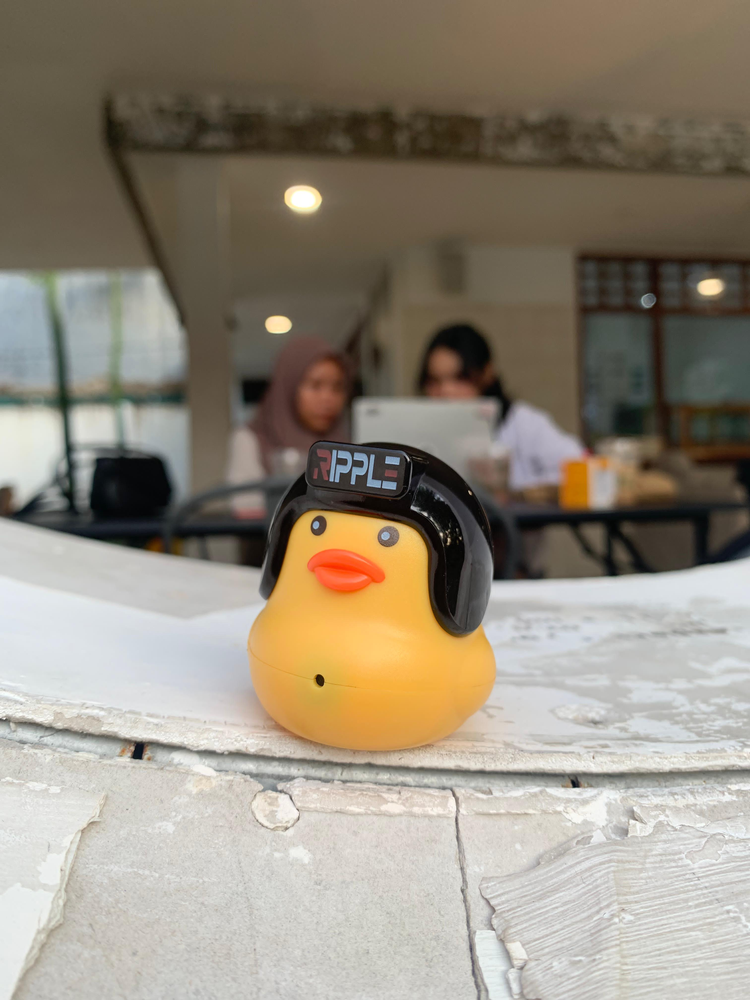
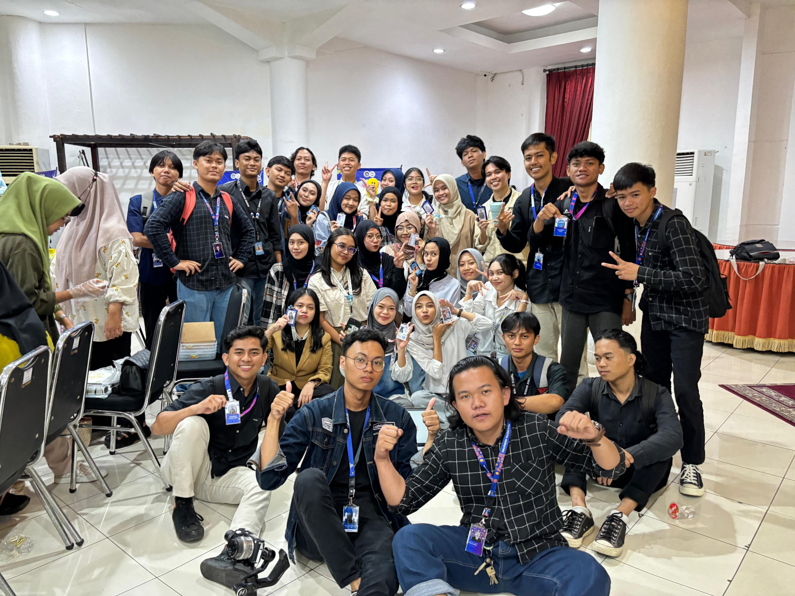

MY PROJECT

Team Digital Merketing

Cluminating Event SPACE
Metalic
Minimalist
Elegant
Simple

Cluminating Event INSPIRE

Breakfasting and Social Service

Class A Goes To Malino



SOCIAL
MEDIA
POST